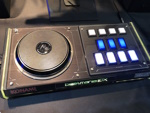
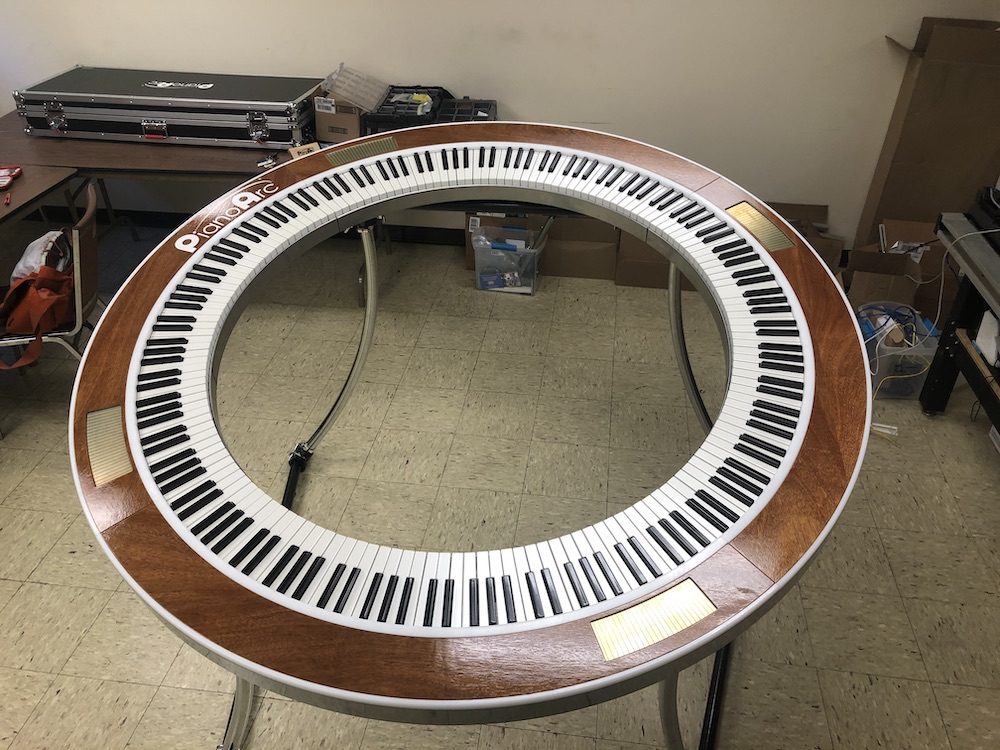
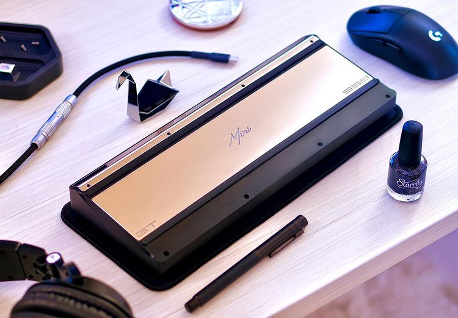

Rhythm games
Started as a kid with games such as Guitar Hero and Rockstar.
Had the accompanying drum kit/guitar combo, and loved the feel of playing "instruments" alongside great songs.
Eventually some of my friends started playing an online rhythm games much similar to Guitar Hero and the likes.
With the main difference being what you used as an "instrument" which was now your computer keyboard, these games were now much more accessible for people.
Picture above is a "BMS controller" for the rhythm game "Beatoraja" or "BMS" for short, also known as "Beatmania", "Lunatic Rave 2" or "IIDX".

Music & Piano
Though the image above is that of a piano, my first instrument was,
as im sure it was for many other people a flute.
Great flute, still have it at home!
Eventually I managed to get my hands on a guitar at home as well as a midi piano.
I sadly never got very far in either instrument, only mainly learnt how to play "Here comes the sun" by the beatles at home for fun.
Didn't get much further on the piano either, had a great time on both instruments though!
Recently been meaning to get back into it, mainly the piano.
Music production and making your own songs from "scratch" is also something I've been meaning to do for the longest time, though no real progress there yet.

Mechanical keyboards
Always been interested in technology, especially computer accessory related.
It took a handful of keyboards breaking before i decided to get something I could repair myself.
Finding something inbetween a prebuilt and fully custom one, i ended up with a hotswap, which allows you to swap certain parts without needing a soldering kit.
End of 2022 I found a new high tech keyboard that was mostly customizable, however due to the technology behind it the hardware pieces you could swap around are a bit more limited.
Though customizable, it needs some of its original parts that are normally swappable in more custom keyboards in order to still work with the new technology.